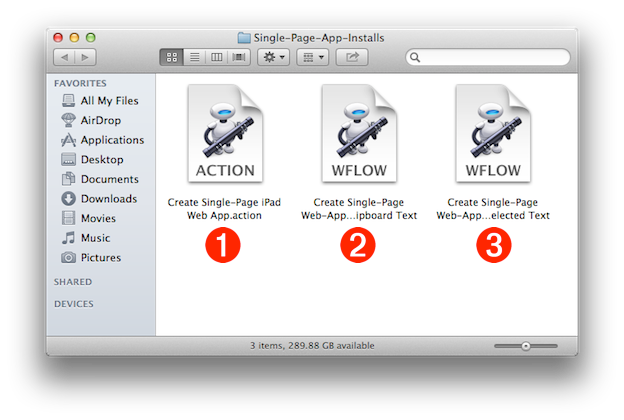
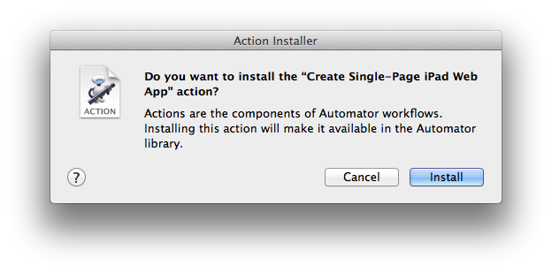
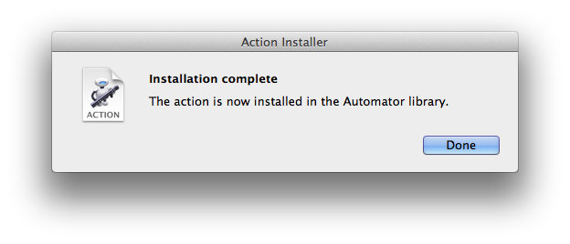
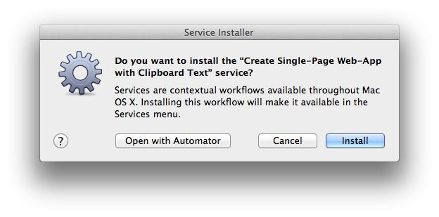
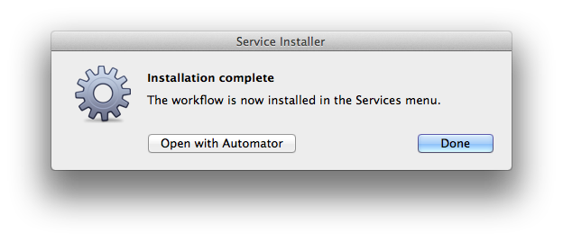
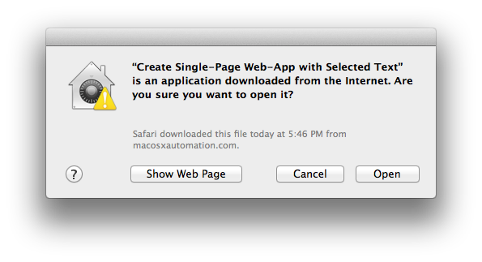
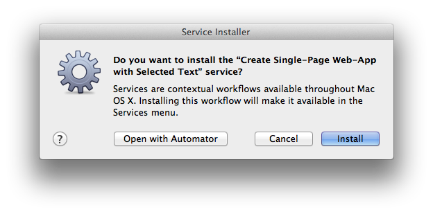

The Single-Page Web-App incorporates one of the simplest but most useful webpage designs, placing the focus on the content rather than the page layout. The compact layout provides limited use of supporting media (images, audio, video), combined with a vertical scrolling one-column display of the story. Even though it is simple to execute, this system service still offers detailed controls for setting type parameters, paper style, and the ability to assign a Creative Commons license to the work.
The Layout Design
The Single-Page Web-App is a publishing design well suited for short papers and stories that require speedy publishing in an attractive layout.
| TEXT | IMAGE | AUDIO | VIDEO |
| iPad tap HERE | iPad tap HERE | iPad tap HERE | iPad tap HERE |
Installing the various system components to enable the use of the Single-Page Web App service is an easy process, involving double-clicking some files in the Finder.
DO THIS ► DOWNLOAD the ZIP archive containing the installation items.
Unpacking the downloaded ZIP archive will create a folder containing the system components for creating a single-page web-app (see below):
1 The Create Single-Page iPad Web App Automator action
2 The Create Single-Page Web-App with Clipboard Text contextual system service
3 The Create Single-Page Web-App with Selected Text contextual system service

Install the Automator Action
The first step of the installation process is to install the Automator action file that contains the code and interface for creating a web-application. Its file is the item in the folder whose icon displays ACTION.
DO THIS ► To install the Automator action, double-click its file icon 1 (see above).
A confirmation dialog will appear (see below), asking for your approval to install the Automator action:

DO THIS ► Click the Install button in the confirmation dialog to begin the installation process.
The operating system will install the Automator action file by automatically moving it into the Automator folder within your home Library folder. A second dialog will confirm the installation (see below). The action is now part of the installed Automator action library, and will appear in the action library in any Automator document window.

Install the System Services
As mentioned at the start of this segment, Automator actions are used by system services to perform tasks, such as creating a web-application from selected textual content. The next step in the installation process is to install the downloaded system services.
DO THIS ► Double-click the icon for the system service file titled Create Single-Page Web-App with Clipboard Text 2 (see above).
A security dialog will appear, informing you that the Automator service workflow was downloaded from the internet. NOTE: the dialog incorrectly mislabels the workflow as an application.
DO THIS ► Click the Open button in the security dialog (see above) to continue the installation process for the system service.
The Service Installer dialog appears, asking you to confirm the installation of the Create Single-Page Web-App with Clipboard Text contextual system service: (see below).

DO THIS ► Click the Install button to install the system service. (see above)
A dialog will appear, confirming the installation of the service. (see below)

DO THIS ► Double-click the icon for the system service file titled Create Single-Page Web-App with Selected Text 3 (see above).
A security dialog appears, informing you that the service was downloaded from the internet. NOTE: the dialog incorrectly identifies the service as an application.

DO THIS ► Click the Open button in the security dialog to continue the installation process.
The Service Installer dialog appears, asking you to confirm the installation of the Create Single-Page Web-App with Selected Text contextual system service: (see below).

DO THIS ► Click the Install button to install the system service. (see above)
A dialog will appear, confirming the installation of the service. (see below)
In the next segment, we’ll examine the interface for the Automator action that creates the HTML content.